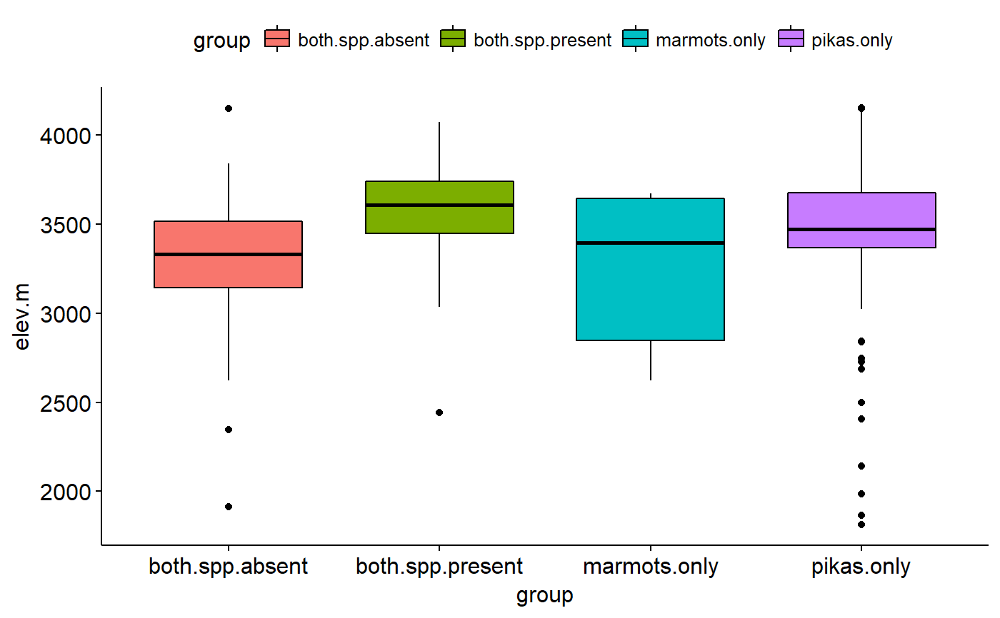

Data on presence of pikas and marmots from Front Range Pika Project
Original data had lat and long for most sites. Elevations estimate using the elevatr package (https://cran.r-project.org/web/packages/elevatr/vignettes/introduction_to_elevatr.html)
pikas
Format
A data frame
- lat
latitude of survey site
- long
longitude of survey site
- pika.pres
Are pikas present or absent from the site
- marmot.pres
Are marmots present or absent
- talus.area
Description of area of talus at site
- elev.m
Elevation of site
- group
Designates whether no focal species seen, pikas only, marmots only, or both
References
Front Range Pika Project. http://www.pikapartners.org/cwis438/websites/FRPP/Home.php?WebSiteID=18
Examples
## Plot data by groups library(ggplot2) library(ggpubr) ## Boxplot ggboxplot(data = pikas, x = "group", y = "elev.m")## Means with error bars ggerrorplot(data = pikas, x = "group", y = "elev.m", desc_stat = "mean_ci")